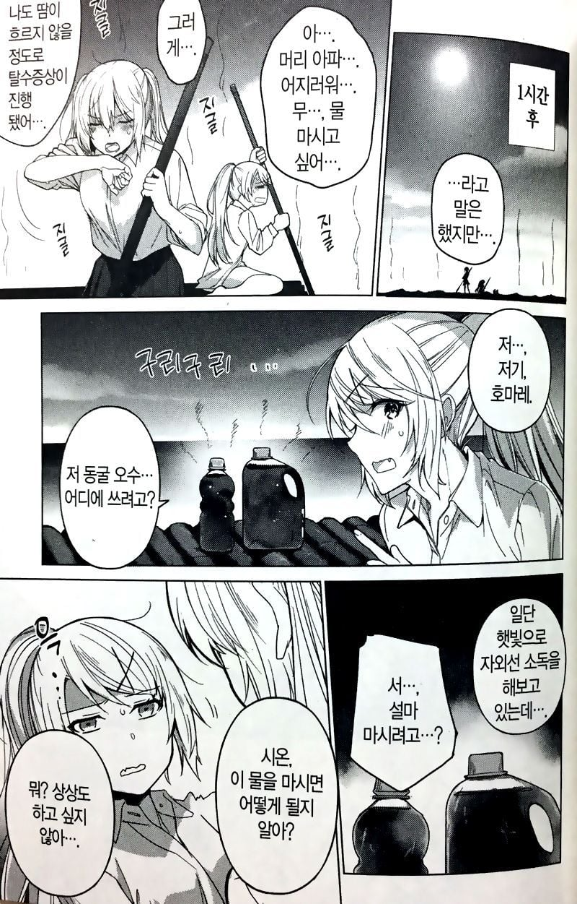
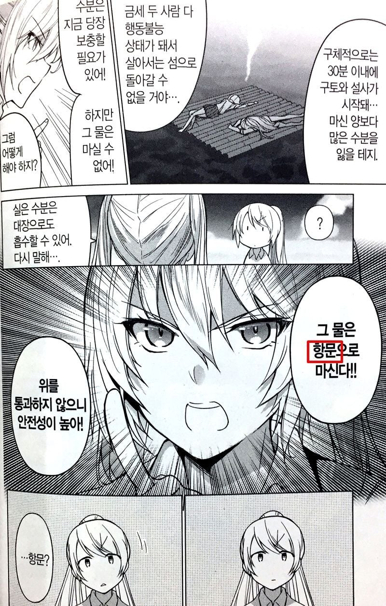
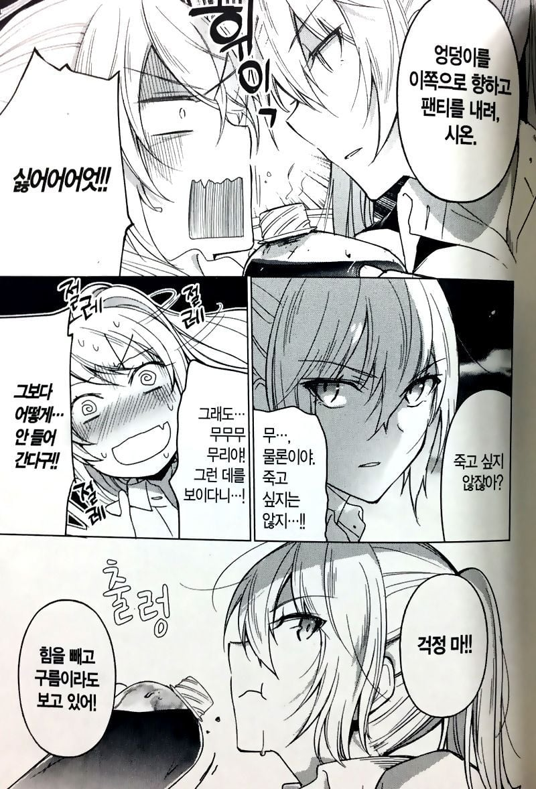
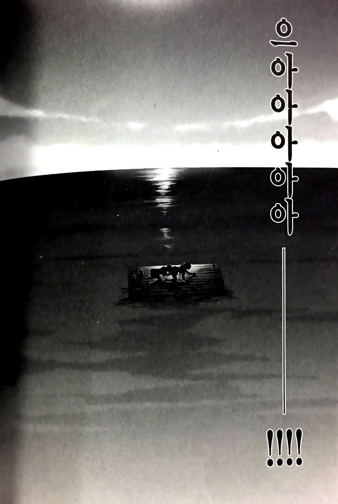
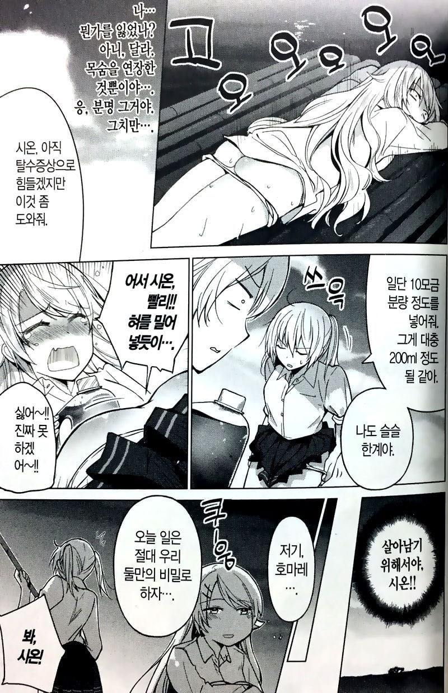

포신이 없음에도 이정도로 기합찬 전우애를 보여주다니!

책을 사진찍은건가 뭐이리 휘었어 ㅋㅋ
근데 저러면 그냥 관장아니냐?
허윽
설사 할텐데
뭐야 진짜야?ㅋㅋㅋ
베어그릴스가 진짜 했었음
그 외로 항문으로 술 부었다가 간이 해독작용 관여 못해서 급성알콜중독으로 사망한 남자가있다는 인터넷 썰도 종종 돌아다님 ㅋㅋ
간해독작용 관여?는 항문으로 해도 다 됩니다~
근데 항문은 흡수가 너무 빠르대 그래서 급성중독
아하 잘못된 정보였구나
위염이 심해서 아무것도 못먹을때 경구수액을 항문으로 주입하는 방법이 있다 카더라
저러면 물을 마신 것처럼 갈증이 사라지나? 신기하네
베어그릴스가 비슷한거 하긴 했었음
초응급상황에서 죽을바엔 뭐라도 해보자 느낌으로 하는거임
그... 돼지들이나 소들 한여름에 고열과 탈수로 쓰러지면
항문에 얼음 쏟아넣음...
설사각으로 탈수 아님?
그냥 벌리고 넣어도 들어가지 않나?
너 설마 도구없이 똥구녕을 자의로 벌리고 액체를 집어넣을수 있다는거냐

여간 기합이 아니었다
대장으로는 세균 흡수를 안하나
대장은 세균에 저항성이 강하지 않을까
세균흡수가 됐으면 모든 생명체가 똥독으로 죽었을듯
대장 자체가 세균에 오질라게 강하기도 하고 대장 내에 득시글한 세균끼리 나와바리 나눠먹고 균형을 이루고 있어서 외부에서 양아치 몇 투입한다 해도 자리잡은 세력이 걔네가 자리잡고 번식 못하게 함
흡수가됨
그나마 식도를 타고 정주행 하는 것보다 낫다 정도임
새끼..기합!